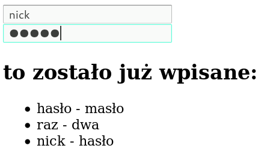
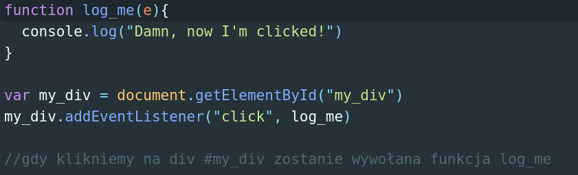
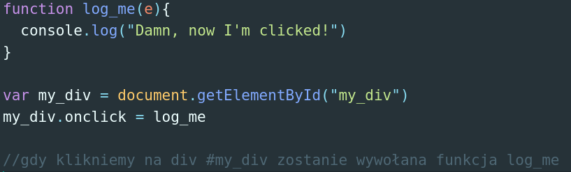

Warsztaty Webowe grupa średniozaawansowana
DOM - Document Object Model
DOM przedstawia stronę internetową jako ustrukturyzowane drzewo węzłów, którymi możemy manipulować za pomocą np. JS-a

Jeśli chcemy podejrzeć jak wygląda DOM na naszej stronie, możemy użyć DOM Viewer lub zanurkować w narzędzia developerskie w naszej przeglądarce!
document.getElementById("id")
document.getElementsByTagName("tag")
document.getElementsByClassName("class")
document.createElement(element)
document.removeChild(element)
document.appendChild(element)
document.replaceChild(element)
element.attribute = new value
element.style.property = new style
Pobierz plik input.html, uzupełnij funkcje save_inputs() w taki sposób by po jej wywołaniu do listy <ul> został dodany nowy element <li> z zawartością pól #input_1 i #input_2
Eventy generowane przez DOM możemy obsługiwać na dwa sposoby:
element.addEventListener(type, handler, options)
type - typ eventu który chcemy obsłużyć
handler - funkcja która zostanie wywołana
options - dodatkowe opcje
Element DOM-u może posiadać specjalne pola które służą do obsługiwania określonych eventów, np. onclick, onkeypress, onfocus ...
Stwórz prostą stronę na której będzie znajdował się czerwony kwadrat 200px x 200px (zwyczajny div). Dodając odpowiedni event spraw że po każdym kliknięciu kwadrat zmieni swój kolor.
Zwiększ ilość kwadratów, każdemu przypnij event który sprawi że po najechaniu myszką kolor danego kwadratu się zmieni.
Stwórz stronę na której zostaną wstawione zdjęcia wszystkich kotków znajdujących się w tablicy w pliku koty.txt. Po kliknięciu na zdjęcie kota powinien wyskoczyć alert (window.alert()) z jego imieniem oraz poziomem słodkości.
Prosiłbym o dodanie do Waszych projektów arkusza stylów czyli css. Macie na to dwa tygodnie.